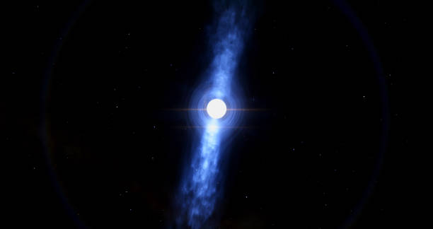
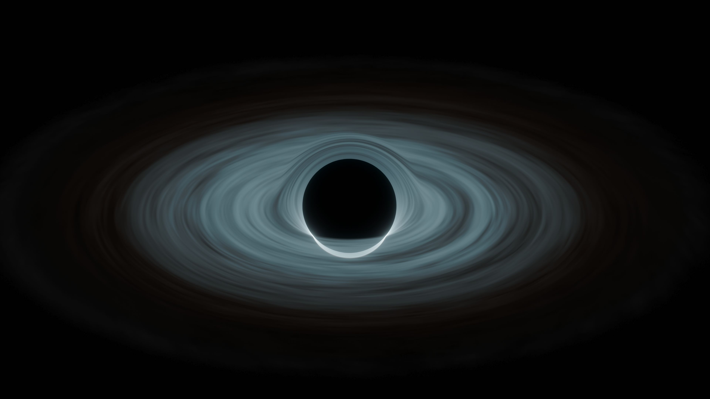
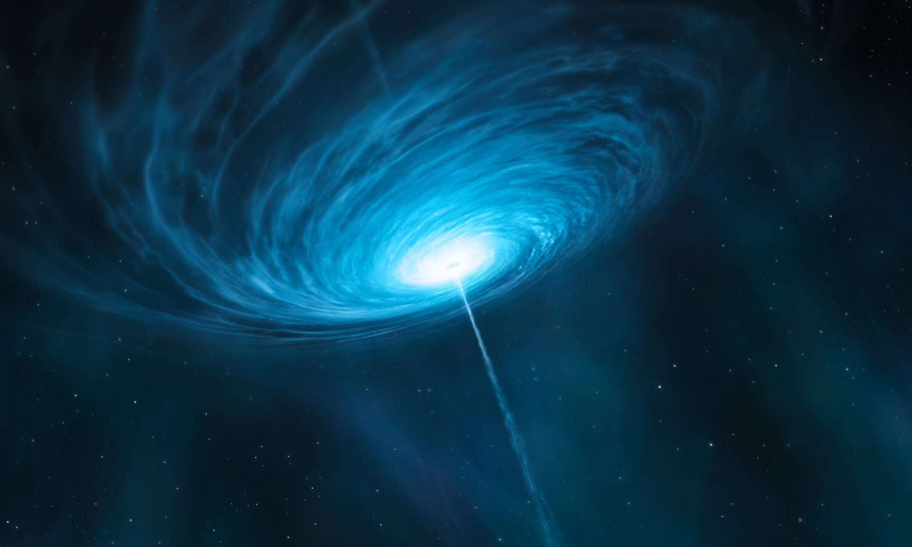
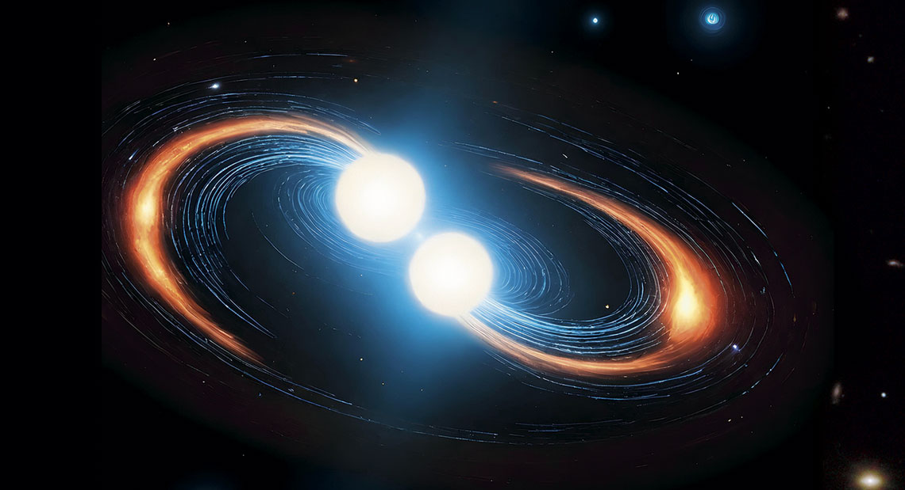

Pulsar
Um pulsar é uma estrela de nêutrons altamente magnetizada que gira rapidamente, emitindo pulsos regulares de radiação.

Buraco Negro
Buracos negros são regiões do espaço onde a gravidade é tão forte que nem mesmo a luz pode escapar.

Quasar
Quasares são núcleos ativos de galáxias distantes, alimentados por buracos negros supermassivos.

Estrela de Nêutrons
Uma estrela de nêutrons é o núcleo colapsado de uma estrela massiva que explodiu em uma supernova.